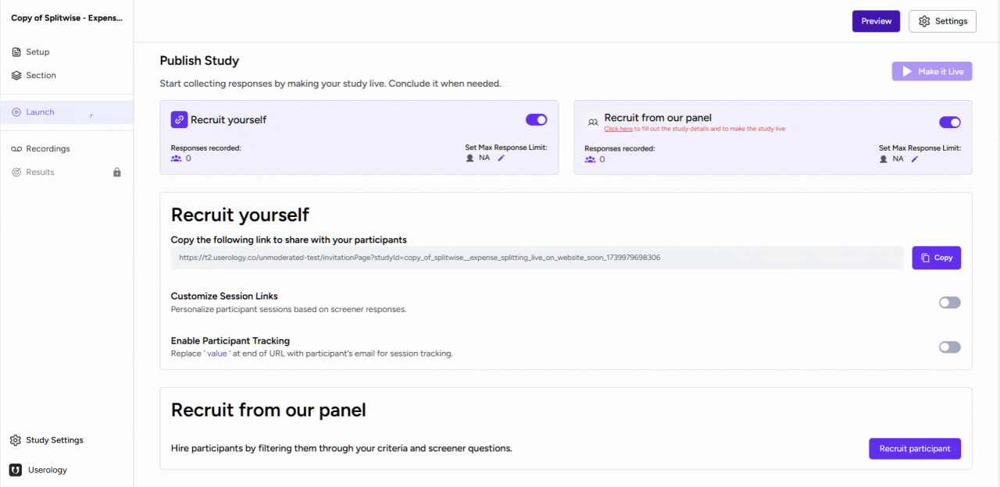
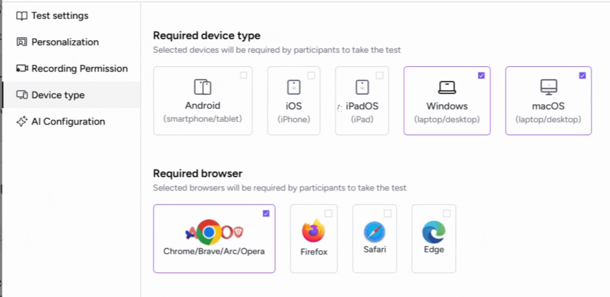
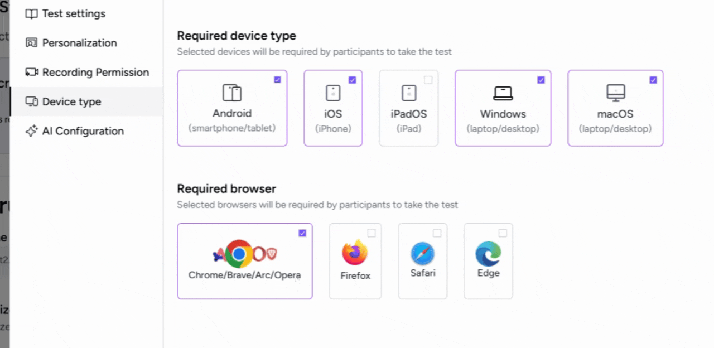

This article will guide you through the process of setting up device and browser requirements for participants taking a Userology test.
1. Accessing the Settings
To begin, navigate to the 'Settings' button located in the 'Launch' tab. Once you're in the settings, you'll find a tab labeled 'Device type'. Click on this tab to proceed.

2. Choosing the Required Devices
In the 'Device type' section, you'll see a list of different devices. Here, you can select the devices that participants will need to take the test.
For instance, you can choose 'Android' or 'iPhone' (iOS).

3. Selecting the Required Browsers
In addition to device type, you can also specify the browsers that participants will need to use for the test. For example, you can select 'Chrome', 'Brave', 'Opera', 'Arc', and 'Safari'.

By setting these requirements, you ensure that participants will take the test on the specified devices and browsers.
If you need further help, please email us at support@userology.co